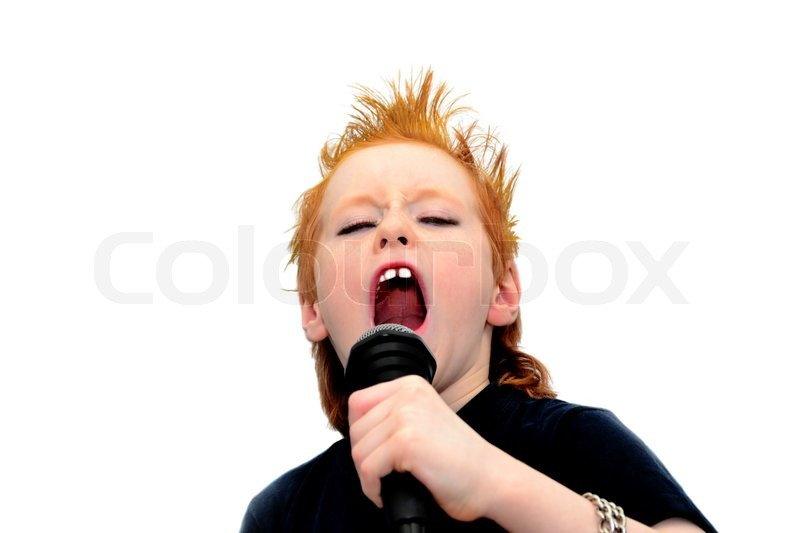
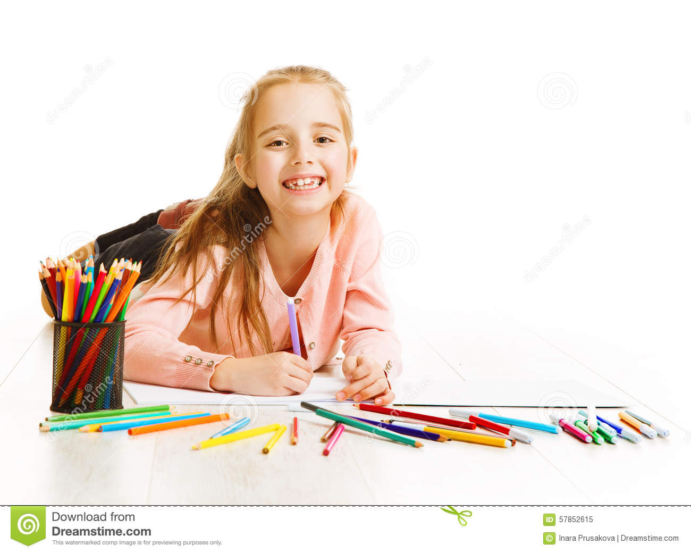

My Hobbies
Cooking
One of my favorite things to do is cooking. I love being able to create what I want to using food.
To me, cooking is very calming and therapeutic. Seeing the end result is satisfying, especially if it turned out good.
cooking and food can bring people together and make anyone's day 100x better.
Music
Music is my passion. I love both listening to music and creating music. I listen to music all of the time, whether
I'm drawing, reading, painting, sleeping, or even doing school work. It helps me keep calm and focus
on what I am doing. Making music is also really fun. Much like cooking it is satisfying to see the end result,
especially for someone like me who has to make everything perfect.
Art
I love drawing and creating art. It helps me focus and calm down. If I am feeling stressed I will try and paint
something. I am almost always doodling, and most of my homework will have sketches on it. Drawing is something I've
always loved. I've been drawing for as long as I can remember. Sometimes, if I am having an art block, it can be
more frustrating than relaxing.
Dancing

Dancing is one of my favorite things to do. For me, it releaves stress, and helps me focus fetter. It is a healthy way
to deal with any built up anger. I love learning new choreography to songs I love. Although I know I am not the best at it
I still love to do it. I hope to become a better dancer in the future and start taking classes.